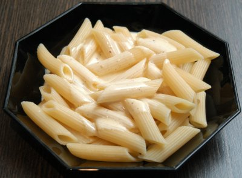

| Zutaten: | |
| 1 | Eigelb |
| 1 Becher | Sauerrahm |
| Salz | |
| Pfeffer | |
| Muskatnuss | |
Alles verrühren und zu den Teigwaren servieren.
Anina via Sandra Keller
Sehr gut gemäss Sandra. Einfach und schnell. Kühlt die Teigwaren etwas ab. Schmeckt gut, RE 14.10.2006
@LINKBACK_TAG@ @WAKELOCK@